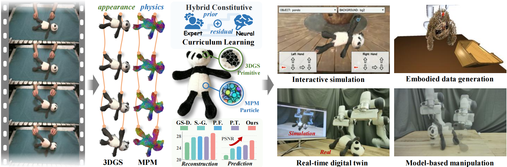
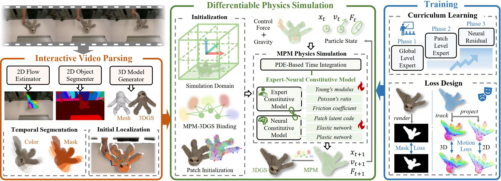

PhysReal couples 3DGS-based appearance with differentiable MPM physics to recover object-specific deformable dynamics from single-view interactive videos. By modeling spatially varying hybrid expert-neural constitutive fields, PhysReal combines interpretable physical priors with neural residuals, enabling accurate reconstruction, future prediction, and downstream robotic applications.
Learning physically plausible dynamics from visual observations is a fundamental capability for interactive world models and embodied agents. However, real-world deformable objects are particularly challenging in this setting, as their behaviors often arise from heterogeneous and complex physical responses. To tackle this challenge, we introduce PhysReal, a novel video-driven deformable object modeling and simulation framework. Specifically, we develop a spatially varying hybrid expert-neural constitutive model integrated with the differentiable MPM and 3DGS, where expert models provide interpretable physical priors and neural residuals capture responses beyond analytical formulations. The constitutive field is represented by spatially distributed patches, allowing continuous modeling of local material variations. We further design a progressive curriculum learning strategy that gradually learns constitutive behaviors from global properties to local variations and residual responses, together with a unified motion-mask supervision scheme for learning from sparse visual observations. Extensive experiments on diverse deformable object interactions demonstrate that PhysReal achieves superior performance in dynamic reconstruction and future state prediction, while showing strong potential for downstream robotic applications.

PhysReal consists of three key components. Interactive Video Parsing extracts temporally consistent object masks, motion trajectories, and an object-centric 3D representation from single-view interaction videos. Differentiable Physics Simulation couples MPM with a spatially varying hybrid expert-neural constitutive model to capture heterogeneous material responses. Finally, a progressive curriculum jointly leverages motion and mask supervision to optimize global material properties, local constitutive variations, and neural residual responses.
PhysReal represents the object as a compact spatially varying constitutive field using distributed material patches. Each local region can express different material properties, while analytical expert models provide interpretable physical priors and neural constitutive residuals capture elastic and plastic responses beyond predefined formulations.
The optimization is progressively expanded from global expert parameters to patch-level spatial variations and finally neural constitutive residuals, following a Global → Local → Residual curriculum. This improves optimization stability while gradually increasing model expressiveness.
Sparse tracked motion provides explicit temporal correspondence for dynamic fitting, while differentiable 3DGS-based mask supervision constrains dense object geometry and silhouette. Their complementary supervision enables robust physical property recovery from sparse visual observations.
We evaluate PhysReal on both the public PhysTwin dataset and a self-collected interaction dataset. The PhysTwin dataset contains 22 interaction sequences covering deformable linear, planar, and volumetric objects, while our dataset contains 6 interaction sequences involving two stuffed toys and one cloth. For each sequence, the observed interval is used for physical model identification and resimulation, while the remaining frames are reserved for future state prediction.
Qualitative results across the interaction sequences used in our evaluation.
We compare PhysReal with four representative methods: GS-Dynamics, Spring-Gaus, PhysFlow, and PhysTwin. For a fair comparison, all methods are evaluated under the same single-view observation setting.
Select an interaction sequence to compare Ground Truth, PhysReal, and the four baselines.
We evaluate both 3D and 2D physical dynamics using four metrics: Chamfer Distance (CD ↓), Track Error (Track ↓), Intersection-over-Union (IoU ↑), and Peak Signal-to-Noise Ratio (PSNR ↑).
| Method | Training | Testing | ||||||
|---|---|---|---|---|---|---|---|---|
| CD ↓ | Track ↓ | IoU ↑ | PSNR ↑ | CD ↓ | Track ↓ | IoU ↑ | PSNR ↑ | |
| GS-Dynamics | 0.018 | 0.027 | 67.34 | 25.92 | 0.054 | 0.081 | 37.77 | 21.47 |
| Spring-Gaus | 0.016 | 0.027 | 74.35 | 27.59 | 0.034 | 0.062 | 51.32 | 23.79 |
| PhysFlow | 0.010 | 0.017 | 78.80 | 27.88 | 0.017 | 0.034 | 62.20 | 24.42 |
| PhysTwin | 0.011 | 0.013 | 80.90 | 27.83 | 0.017 | 0.027 | 65.79 | 24.87 |
| PhysReal | 0.008 | 0.014 | 86.84 | 28.98 | 0.015 | 0.027 | 75.12 | 26.53 |
| Method | Training | Testing | ||||||
|---|---|---|---|---|---|---|---|---|
| CD ↓ | Track ↓ | IoU ↑ | PSNR ↑ | CD ↓ | Track ↓ | IoU ↑ | PSNR ↑ | |
| GS-Dynamics | 0.000 | 0.000 | 0.00 | 0.00 | 0.000 | 0.000 | 0.00 | 0.00 |
| Spring-Gaus | 0.016 | 0.026 | 82.72 | 22.23 | 0.034 | 0.063 | 61.52 | 17.21 |
| PhysFlow | 0.010 | 0.018 | 79.84 | 21.17 | 0.015 | 0.034 | 64.65 | 16.99 |
| PhysTwin | 0.022 | 0.025 | 74.84 | 19.45 | 0.030 | 0.043 | 60.80 | 16.30 |
| PhysReal | 0.008 | 0.010 | 90.32 | 23.80 | 0.012 | 0.020 | 80.00 | 19.70 |
PhysReal achieves the best CD, IoU, and PSNR on the PhysTwin dataset for both resimulation and future prediction, while achieving the best overall performance across all reported metrics on the self-collected dataset.
Beyond reconstruction and prediction, the recovered physical model supports a range of downstream applications, including interactive simulation, embodied data generation, real-time physical digital twins, and model-based manipulation.
PhysReal supports interactive simulation of novel manipulation trajectories. Users can directly manipulate the recovered object and observe its predicted deformation without retraining or additional optimization.
PhysReal uses privileged particle states to identify reliable grasping and interaction targets across diverse object configurations. Combined with realistic 3DGS rendering, it enables scalable generation of paired visual observations and robot actions.
PhysReal jointly reconstructs the environment, robot, and deformable objects to create a physics-grounded digital twin. Its coupled 3DGS-MPM representation synchronizes visual and physical states for real-time monitoring and simulation of workspace interactions.
PhysReal provides a forward dynamics model for model predictive control (MPC). Given a target configuration, MPC evaluates candidate actions through simulation and optimizes the robot trajectory to achieve the desired object state.